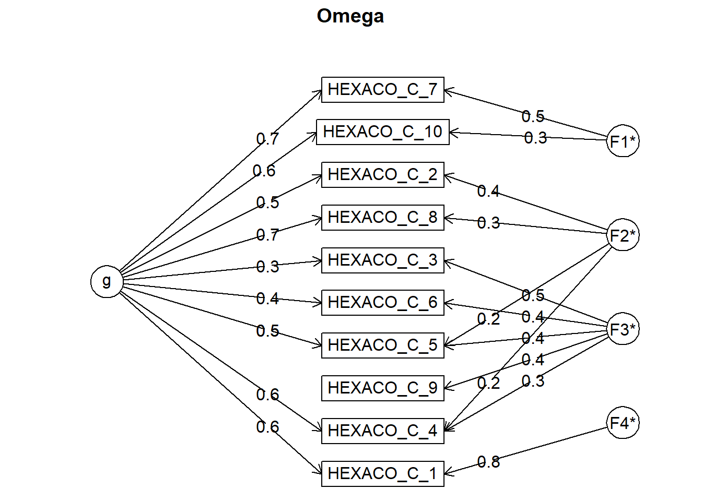
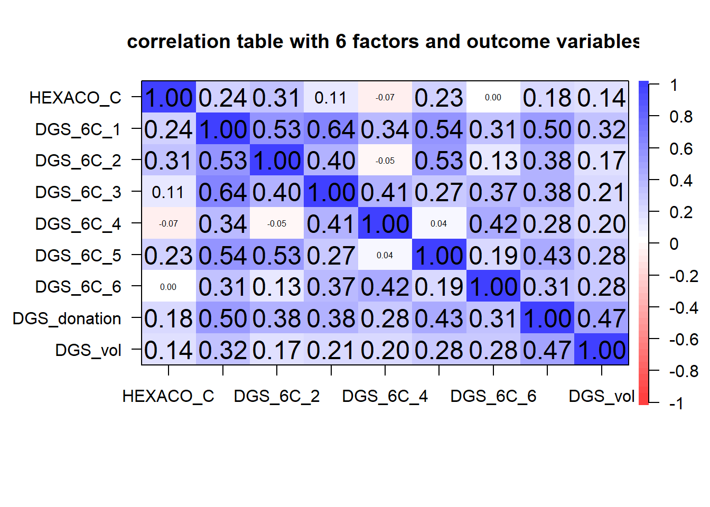
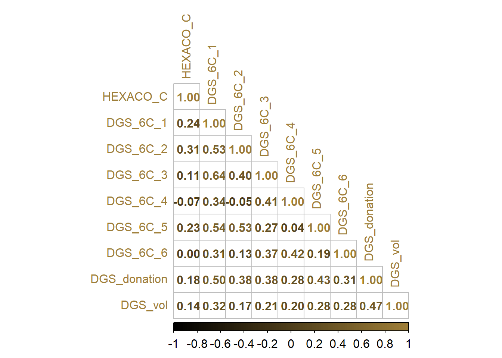

###cleaning
##trimming based on IRT and EFA
###scoring
###inferential analysis
psych::omega(HEXACO_C, nfactors = 4) # alpha = 0.82
## Omega
## Call: omegah(m = m, nfactors = nfactors, fm = fm, key = key, flip = flip,
## digits = digits, title = title, sl = sl, labels = labels,
## plot = plot, n.obs = n.obs, rotate = rotate, Phi = Phi, option = option,
## covar = covar)
## Alpha: 0.82
## G.6: 0.83
## Omega Hierarchical: 0.65
## Omega H asymptotic: 0.74
## Omega Total 0.87
##
## Schmid Leiman Factor loadings greater than 0.2
## g F1* F2* F3* F4* h2 u2 p2
## HEXACO_C_1 0.57 0.82 1.00 0.00 0.33
## HEXACO_C_2 0.55 0.39 0.47 0.53 0.63
## HEXACO_C_3 0.26 0.46 0.29 0.71 0.24
## HEXACO_C_4 0.56 0.21 0.30 0.46 0.54 0.68
## HEXACO_C_5 0.51 0.21 0.44 0.50 0.50 0.52
## HEXACO_C_6 0.36 0.45 0.34 0.66 0.37
## HEXACO_C_7 0.68 0.49 0.70 0.30 0.65
## HEXACO_C_8 0.67 0.34 0.60 0.40 0.73
## HEXACO_C_9 0.42 0.23 0.77 0.12
## HEXACO_C_10 0.64 0.34 0.55 0.45 0.76
##
## With Sums of squares of:
## g F1* F2* F3* F4*
## 2.74 0.41 0.39 0.88 0.72
##
## general/max 3.12 max/min = 2.22
## mean percent general = 0.5 with sd = 0.22 and cv of 0.44
## Explained Common Variance of the general factor = 0.53
##
## The degrees of freedom are 11 and the fit is 0.08
## The number of observations was 836 with Chi Square = 69.43 with prob < 1.6e-10
## The root mean square of the residuals is 0.03
## The df corrected root mean square of the residuals is 0.05
## RMSEA index = 0.08 and the 10 % confidence intervals are 0.062 0.098
## BIC = -4.59
##
## Compare this with the adequacy of just a general factor and no group factors
## The degrees of freedom for just the general factor are 35 and the fit is 0.58
## The number of observations was 836 with Chi Square = 481.93 with prob < 5.6e-80
## The root mean square of the residuals is 0.1
## The df corrected root mean square of the residuals is 0.12
##
## RMSEA index = 0.124 and the 10 % confidence intervals are 0.114 0.134
## BIC = 246.43
##
## Measures of factor score adequacy
## g F1* F2* F3* F4*
## Correlation of scores with factors 0.85 0.58 0.59 0.72 0.93
## Multiple R square of scores with factors 0.72 0.34 0.34 0.52 0.87
## Minimum correlation of factor score estimates 0.44 -0.33 -0.31 0.03 0.74
##
## Total, General and Subset omega for each subset
## g F1* F2* F3* F4*
## Omega total for total scores and subscales 0.87 0.76 0.66 0.70 1.00
## Omega general for total scores and subscales 0.65 0.54 0.48 0.31 0.33
## Omega group for total scores and subscales 0.16 0.22 0.18 0.39 0.67##with factor scores
DGSf_HEXACO <- data %>%
select(c(HEXACO_C,starts_with("DGS_6C_"),DGS_donation,DGS_vol))
data$DGS_donation <- apply(data$DGS_donation, 2, as.numeric)
data$DGS_vol <- apply(data$DGS_vol, 2, as.numeric)
cor.plot(DGSf_HEXACO,
main = "correlation table with 6 factors and outcome variables")
corrplot(cor(DGSf_HEXACO), method = "number", type = "lower",
col = colorRampPalette(c("#000000", "#9E7E38"))(100),
tl.col = "#9E7E38",
tl.cex = 1,
number.cex = 1,
cl.cex = 1,
number.font = 2,
sig.level = 0.05)
m_DGS_beh <- lm (
DGS_donation ~
DGS_6C_1 +
DGS_6C_2 +
DGS_6C_4 +
DGS_6C_3 +
DGS_6C_5 +
DGS_6C_6,
data= data
)
summary(m_DGS_beh)##
## Call:
## lm(formula = DGS_donation ~ DGS_6C_1 + DGS_6C_2 + DGS_6C_4 +
## DGS_6C_3 + DGS_6C_5 + DGS_6C_6, data = data)
##
## Residuals:
## Min 1Q Median 3Q Max
## -5.2931 -0.9212 0.1682 1.0475 3.7444
##
## Coefficients:
## Estimate Std. Error t value Pr(>|t|)
## (Intercept) -1.93374 0.35376 -5.466 6.08e-08 ***
## DGS_6C_1 0.39595 0.09161 4.322 1.73e-05 ***
## DGS_6C_2 0.26006 0.06687 3.889 0.000109 ***
## DGS_6C_4 0.19669 0.04660 4.221 2.70e-05 ***
## DGS_6C_3 0.05903 0.05674 1.040 0.298444
## DGS_6C_5 0.26407 0.04487 5.886 5.76e-09 ***
## DGS_6C_6 0.17897 0.05213 3.433 0.000627 ***
## ---
## Signif. codes: 0 '***' 0.001 '**' 0.01 '*' 0.05 '.' 0.1 ' ' 1
##
## Residual standard error: 1.415 on 829 degrees of freedom
## Multiple R-squared: 0.3345, Adjusted R-squared: 0.3296
## F-statistic: 69.44 on 6 and 829 DF, p-value: < 2.2e-16tab_model(m_DGS_beh)| DGS donation | |||
|---|---|---|---|
| Predictors | Estimates | CI | p |
| (Intercept) | -1.93 | -2.63 – -1.24 | <0.001 |
| DGS 6C 1 | 0.40 | 0.22 – 0.58 | <0.001 |
| DGS 6C 2 | 0.26 | 0.13 – 0.39 | <0.001 |
| DGS 6C 4 | 0.20 | 0.11 – 0.29 | <0.001 |
| DGS 6C 3 | 0.06 | -0.05 – 0.17 | 0.298 |
| DGS 6C 5 | 0.26 | 0.18 – 0.35 | <0.001 |
| DGS 6C 6 | 0.18 | 0.08 – 0.28 | 0.001 |
| Observations | 836 | ||
| R2 / R2 adjusted | 0.334 / 0.330 | ||
m_DGS_beh <- lm (
DGS_vol ~
DGS_6C_1 +
DGS_6C_2 +
DGS_6C_4 +
DGS_6C_3 +
DGS_6C_5 +
DGS_6C_6,
data= data
)
summary(m_DGS_beh)##
## Call:
## lm(formula = DGS_vol ~ DGS_6C_1 + DGS_6C_2 + DGS_6C_4 + DGS_6C_3 +
## DGS_6C_5 + DGS_6C_6, data = data)
##
## Residuals:
## Min 1Q Median 3Q Max
## -3.612 -1.270 -0.256 1.229 5.152
##
## Coefficients:
## Estimate Std. Error t value Pr(>|t|)
## (Intercept) -0.57207 0.41951 -1.364 0.173047
## DGS_6C_1 0.37930 0.10864 3.491 0.000506 ***
## DGS_6C_2 -0.01980 0.07930 -0.250 0.802859
## DGS_6C_4 0.11291 0.05526 2.043 0.041355 *
## DGS_6C_3 -0.06663 0.06729 -0.990 0.322319
## DGS_6C_5 0.22294 0.05321 4.190 3.09e-05 ***
## DGS_6C_6 0.30152 0.06182 4.877 1.29e-06 ***
## ---
## Signif. codes: 0 '***' 0.001 '**' 0.01 '*' 0.05 '.' 0.1 ' ' 1
##
## Residual standard error: 1.678 on 829 degrees of freedom
## Multiple R-squared: 0.1587, Adjusted R-squared: 0.1526
## F-statistic: 26.05 on 6 and 829 DF, p-value: < 2.2e-16tab_model(m_DGS_beh)| DGS vol | |||
|---|---|---|---|
| Predictors | Estimates | CI | p |
| (Intercept) | -0.57 | -1.40 – 0.25 | 0.173 |
| DGS 6C 1 | 0.38 | 0.17 – 0.59 | 0.001 |
| DGS 6C 2 | -0.02 | -0.18 – 0.14 | 0.803 |
| DGS 6C 4 | 0.11 | 0.00 – 0.22 | 0.041 |
| DGS 6C 3 | -0.07 | -0.20 – 0.07 | 0.322 |
| DGS 6C 5 | 0.22 | 0.12 – 0.33 | <0.001 |
| DGS 6C 6 | 0.30 | 0.18 – 0.42 | <0.001 |
| Observations | 836 | ||
| R2 / R2 adjusted | 0.159 / 0.153 | ||